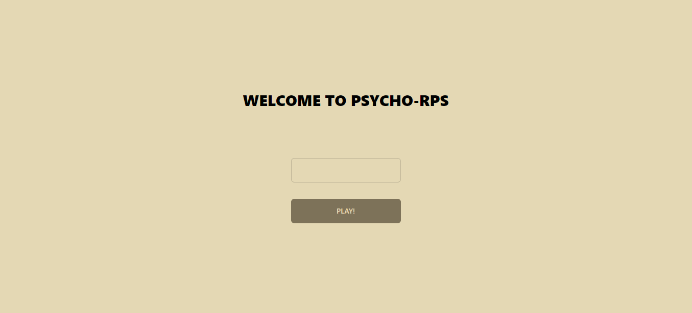
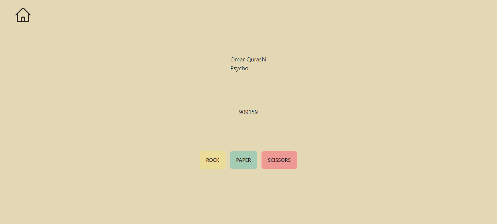
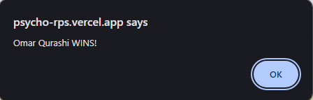

A tech demo demonstrating Websockets through a simple game of rock-papers-scissors. The game lets you pick out a name, then you can send the game code to your friend so you can play against each other.
The demo was built on the T3 Stack (tRPC, TypeScript, Next.js, Prisma, Tailwind). This stack promotes type-safety from the get-go, for both the frontend and backend. tRPC allows you to set up a type-safe API right alongside your frontend with type checking and intellisense.
The game connection utilizes Websockets to maintain a connection between the 2 players, and update the game state according to player actions. The demo is hosted on Vercel.
  